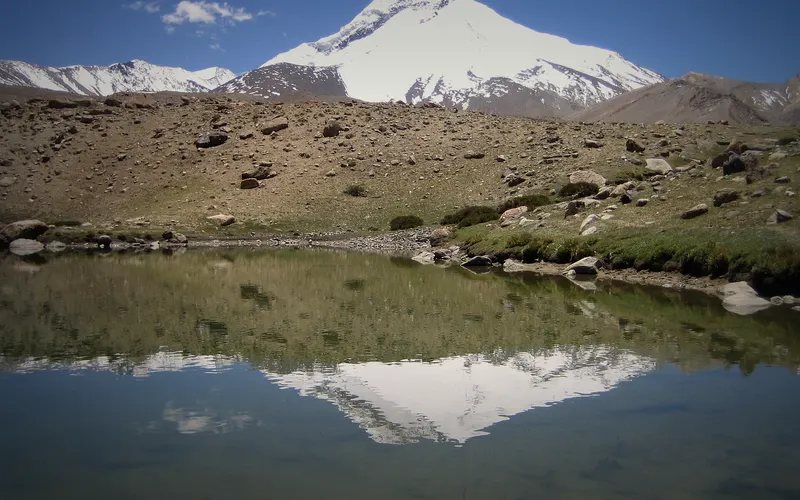
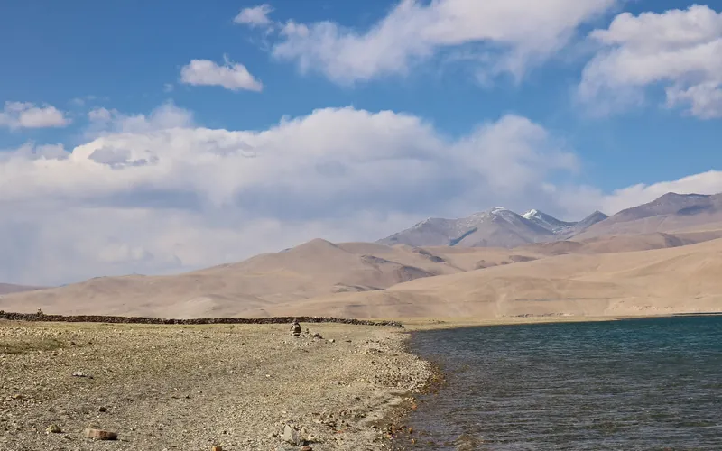
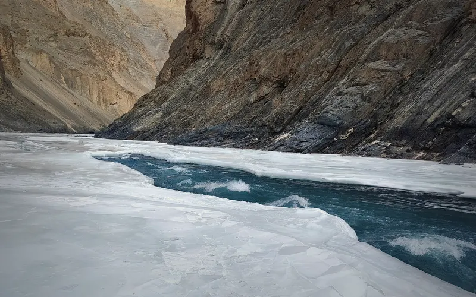

3 treks
Every trek in Leh district, Ladakh, in the Treqz atlas, easier and shorter first.
| Trek | Highest point | Days on trail | Difficulty | Best months |
|---|---|---|---|---|
| Markha Valley | 5,260 m | 5 | Moderate–hard | Jul–Aug |
| Rumtse to Tso Moriri | 5,435 m | 7 | Hard | Jul–Aug |
| Chadar | 3,399 m | 9 | Hard | Jan |

Moderate–hard · 5 daysPhoto: SlartibErtfass der bertige, CC BY-SA 3.0
Markha Valley
▲ 5,260 m · Best Jul–Aug
Hard · 7 daysPhoto: Ingo Mehling, CC BY-SA 3.0
Rumtse to Tso Moriri
▲ 5,435 m · Best Jul–Aug
Hard · 9 daysPhoto: Atulbhats, CC BY-SA 4.0
Chadar
▲ 3,399 m · Best JanQuestions
Which are the treks in leh, ladakh?
The Treqz atlas lists Markha Valley, Rumtse to Tso Moriri, Chadar.
Which is the easiest of the treks in leh, ladakh?
Markha Valley: graded Moderate–hard, 5 days on the trail.
Which is the highest of the treks in leh, ladakh?
Rumtse to Tso Moriri, with a highest point of 5,435 m.
Which is the shortest of the treks in leh, ladakh?
Markha Valley: 5 days on the trail.